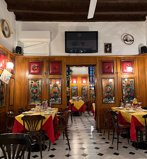

L'immagine Bistrot
A refined yet welcoming Milanese restaurant known for its elegant interior and authentic Italian cuisine.
Address: Via Varesina 61, 20156 Milan, Italy
What I enjoyed: The homemade pasta and cosy atmosphere made it a perfect place for a relaxed dinner.